Эта статья была переведена с помощью
компьютера. Если вы хотите помочь улучшить
перевод, пожалуйста, напишите мне.
Мой адрес электронной почты указан на
главной странице
Я рекомендую приобрести программатор T48 от XGecu. Он прост в использовании, подключается к вашему компьютеру через USB и будет работать с большинством доступных ППЗУ. Программа Xgpro от XGecu для Windows также позволяет использовать этот программатор для тестирования большинства логических микросхем на «Ленинграде-1».
Для пользователей Linux и Mac Minipro разрабатывается как кроссплатформенная альтернатива фирменному программному обеспечению XGecu только для Windows. На момент написания статьи это по-прежнему инструмент только для CLI с «экспериментальной» поддержкой T48.
Если вы предпочитаете не использовать утилиту Windows из-за прекращения поддержки Microsoft Windows 10, обратите внимание, что можно активировать Windows 10 LTSC 2021 (поддерживается до 2032 года) с помощью утилиты с открытым исходным кодом. Windows LTSC - это «хорошая версия» Windows от Microsoft, которая поставляется без всех дополнительных бесполезных компонентов, входящих в состав W10/11 Pro.
Однако следует иметь в виду одну вещь - при использовании в устройстве, рассчитанном на 27128, дополнительные контакты с более высоким адресом, имеющиеся на ПЗУ большей емкости, будут подключены к VCC (логика 1). Следовательно, вам нужно будет записать двоичные данные объемом 16 КБ в верхние 16 КБ памяти.
На этой диаграмме показаны конфигурации
для записи в несколько типов ППЗУ.
|
|
|
|
|
|
|
27128/27C128
|
|
|
|
|
|
27256/27C256
|
|
|
|
|
|
28C256
|
|
|
|
|
|
27512/W27C512
|
|
|
|
|
Технически не имеет значения, что вы пишете в поле «оставьте пустым», поскольку компьютер не сможет это прочитать.
 Список совместимости с XGecu T48
Список совместимости с XGecu T48
TXT документ, 1,27 МБ - Список
ПЗУ, совместимых с программатором T48.


 Sinclair Бейсик ПЗУ
Sinclair Бейсик ПЗУ
BIN данные, 16,0 КБ - Оригинальная
Бейсик программа Sinclair 1982 года выпуска.
 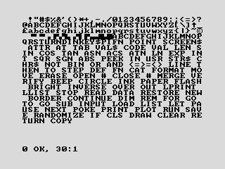
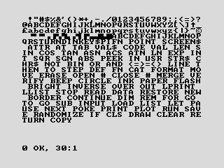
 Балтик ПЗУ версия 1.0
Балтик ПЗУ версия 1.0
BIN данные, 16,0 КБ - Разработан
в Беларуси. Заменяет символы Sinclair на жирные,
в стиле MS-DOS.
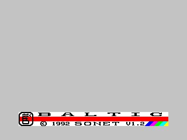
 Балтик ПЗУ версия 1.2
Балтик ПЗУ версия 1.2
BIN данные, 16,0 КБ - Разработан
в Беларуси в 1992 году.

 Балтик Турбо ПЗУ
Балтик Турбо ПЗУ
BIN данные, 16,0 КБ - Разработан
в Беларуси.

 Новосибирск НЕТИ АиТ ПЗУ
Новосибирск НЕТИ АиТ ПЗУ
BIN данные, 16,0 КБ - Разработан
в Новосибирске, Российская СФСР, в 1986 году.


 Веста ИК-30 ПЗУ
Веста ИК-30 ПЗУ
BIN данные, 16,0 КБ - Разработан
в России в 1991 году.
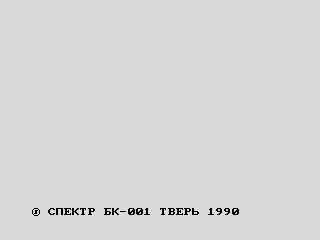 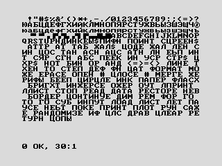
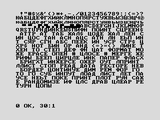
 Спектр БК-001 ПЗУ
Спектр БК-001 ПЗУ
BIN данные, 16,0 КБ - Разработан
в Твери, Российская СФСР, в 1990 году. Символы
Sinclair заменены жирным шрифтом в стиле MS-DOS.
Набор кириллических символов можно активировать,
нажав клавишу Symbol Shift + Space.
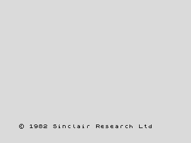
 Gosh Wonderful ПЗУ версия 1.32
Gosh Wonderful ПЗУ версия 1.32
BIN данные, 16,0 КБ - Разработан
Джеффом Уилмутом в 2004 году. Обновленная
версия Sinclair Бейсик.
Инструкции
HTML страница, 25,9 КБ


 OpenSE Бейсик ПЗУ версия 3.1.2
OpenSE Бейсик ПЗУ версия 3.1.2
BIN данные, 16,0 КБ - Разработан
в 2012 году. Обновленная версия Sinclair Бейсик.
 Инструкции
Инструкции
PDF документ, 652 КБ
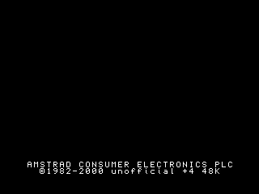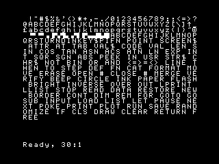
 Неофициальный Spectrum +4 Бейсик ПЗУ
Неофициальный Spectrum +4 Бейсик ПЗУ
BIN данные, 16,0 КБ - Разработан
Эндрю Оуэном в 2000 году. Обновленная версия
Sinclair Бейсик.
 Инструкции
Инструкции
TXT документ, 7,24 КБ


 cxemateka.ru Диагностика ПЗУ
cxemateka.ru Диагностика ПЗУ
BIN данные, 2,00 КБ - Разработан
Константином Айги. Тестирует буфер и оперативную
память. Весь текст на русском языке. Запись
в начало блока размером 16 КБ, соответствующего
вашему ПЗУ. (например, начиная с 0000, 4000
или C000 - см. таблицу выше)
 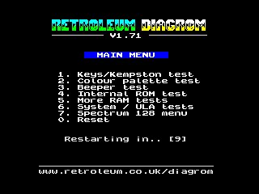
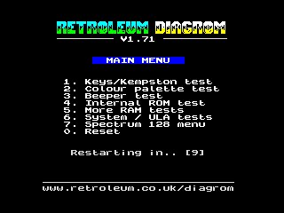
 Retroleum Диагностика ПЗУ версия 1.71
Retroleum Диагностика ПЗУ версия 1.71
BIN данные, 16,0 КБ - Разработан
Филом Растоном в 2024 году. Чрезвычайно всеобъемлющий,
позволяет протестировать практически
все компоненты системы. В некоторых тестах
могут возникать ошибки из-за различий в
аппаратном обеспечении «Ленинграда-1»
по сравнению с оригинальным ZX Spectrum.
 Инструкции
Инструкции
PDF документ, 100 КБ - Обратите
внимание, что некоторые из описанных в
этом документе действий по устранению
неполадок применимы только к оригинальному
ZX Spectrum.